добавили 20+ фреймов, дополнили UI kit, создали логобук и гайдлайн
срок:
3 недели
концепт
В основе концепции — контраст строгой финансовой логики и яркого лаймового акцента. Тёмные поверхности, крупная типографика и мягкие градиенты помогают быстро считывать главное и делают ежедневные сценарии понятными.
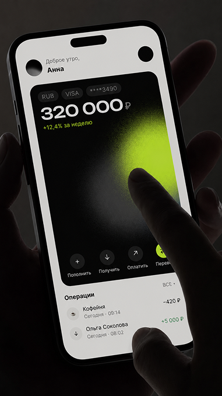
Концепт главного экрана
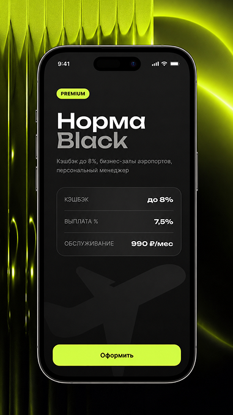
Премиальный продукт «Норма Black»
палитра
#D4FC46
#4F4F51
#636A83
#E7E6DF
логобук
Логотип собран из простых модулей и поддерживает характер продукта — технологичный, точный и дружелюбный. Знак и написание сохраняют читаемость как в интерфейсе, так и в рекламных материалах.
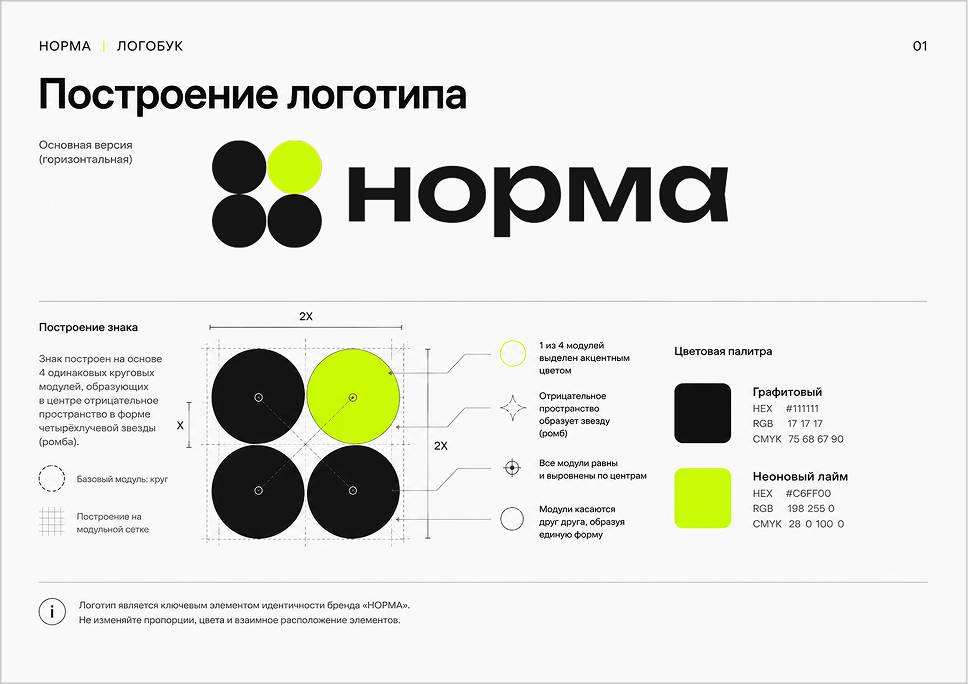
Построение логотипа
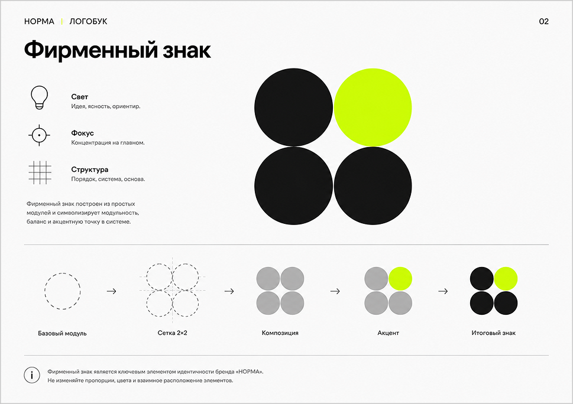
Фирменный знак
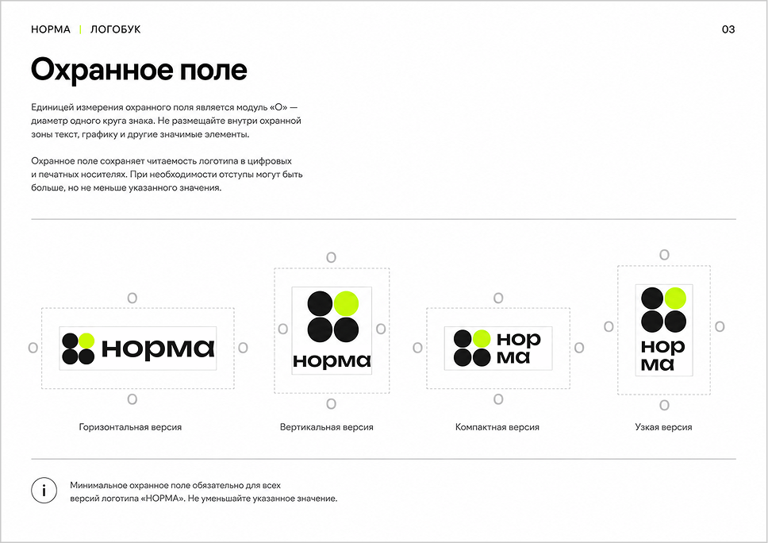
Охранное поле
экраны
Интерфейс объединён единой дизайн-системой: ключевые действия выделены лаймовым цветом, а суммы и статусы быстро считываются. Экраны показывают основные сценарии — от входа и главной до накоплений, вкладов, переводов и подтверждения операций.
создать спокойный лендинг для выбора дома и быстрого бронирования отдыха
результат:
адаптивный интерфейс, фирменный стиль и понятный сценарий бронирования
срок:
2 недели
концепт
В основе концепции — ощущение длинной паузы вдали от города. Воздух в композиции, спокойная природная палитра и крупные фотографии передают тишину северного озера, а короткие фразы и заметные действия помогают быстро выбрать дом и перейти к бронированию.
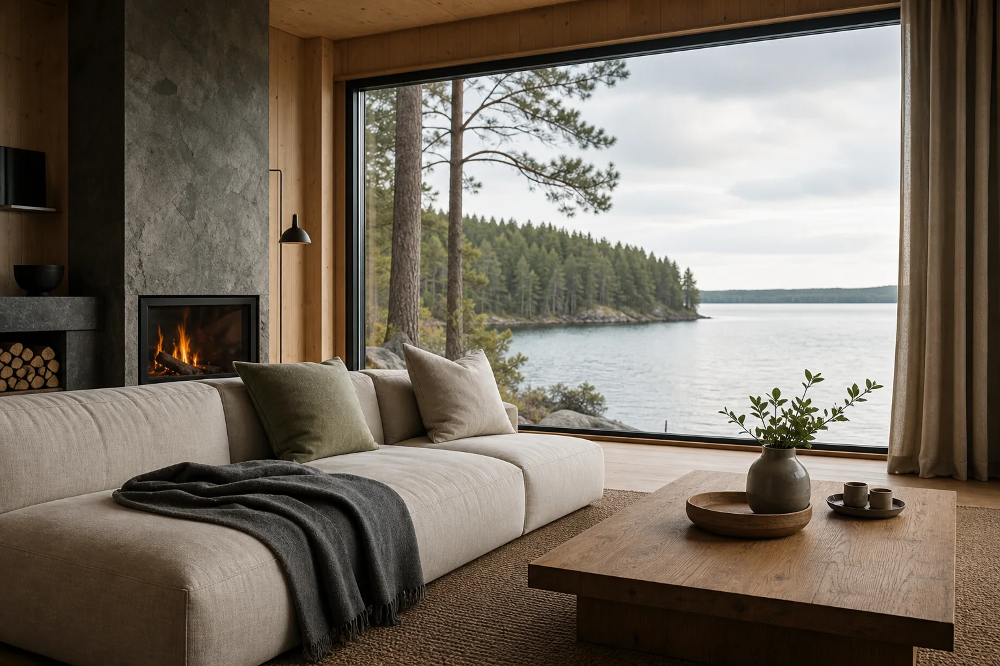
Тёплое пространство внутри
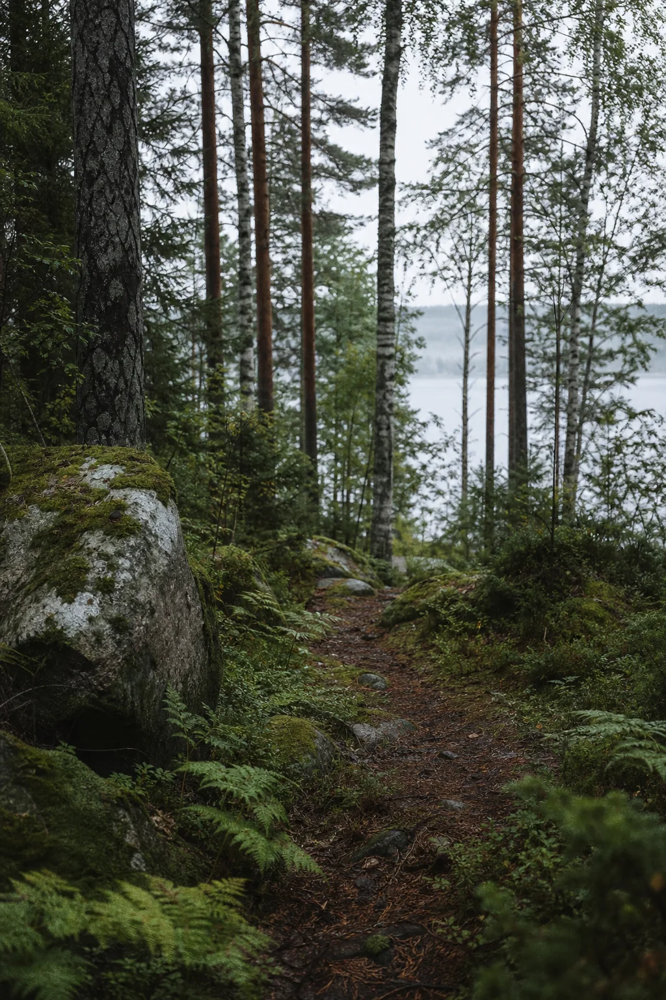
Северная природа как главный образ
палитра
#F2F0E8 · молочный
#B9C2A3 · шалфейный
#26302A · хвойный
#B56F45 · терракотовый
логобук
Словесный знак построен на широких буквах и увеличенных паузах — так даже название визуально звучит тише. Круглый знак отсылает к отражению луны в воде и работает как самостоятельная метка на носителях.
Построение словесного знакаЗнак и его образФирменный знак на фотографии
настольная версия
Страница ведёт от атмосферы места к выбору дома, показывает включённые впечатления и завершает сценарий короткой формой. Повторяющийся призыв выбрать даты остаётся заметным, но не спорит с фотографиями.
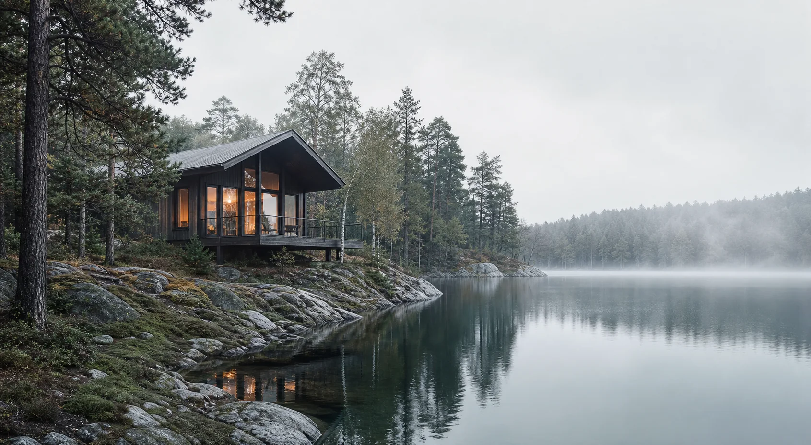
ТИШЬДома Чем заняться О местеВыбрать даты
Карелия · берег озера
Место, где слышно тишину
Четыре дома среди сосен. Вода, тепло и время для себя.
Смотреть дома ↓
О месте
Не уезжать от жизни, а возвращаться к ней
Просыпайтесь у воды, гуляйте без маршрута и оставайтесь у огня столько, сколько захочется.
4 дома на первой линии
Дома
Выберите свой вид на тишину
Дом «Сосна» · до 4 гостей
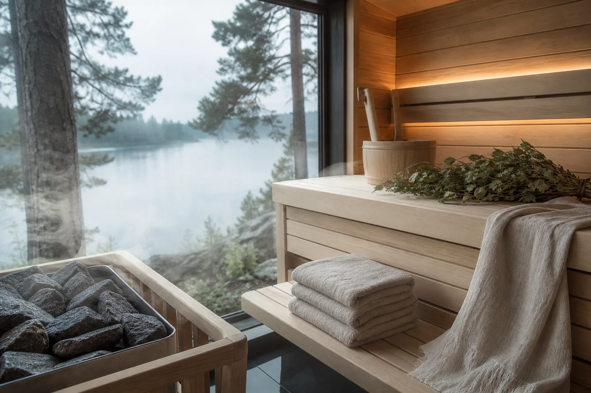
Дом «Вода» · до 2 гостей
Включено в проживание
Лодка, сауна, завтрак и лес
Тихая прогулка по озеру
Сауна с видом на воду
Завтрак у двери каждое утро
Гости о нас
«Здесь впервые за долгое время не хотелось проверять время»
Анна и Михаил · три ночи в доме «Сосна»
Бронирование
Выберите даты для своей паузы
Заезд 18 сентябряВыезд 21 сентябряГости 2 взрослыхНайти дом →
Полная настольная версия лендинга
мобильная версия
На небольшом экране сохраняются крупные фотографии, спокойный ритм и быстрый доступ к выбору дат. Карточки домов и форма перестраиваются в последовательный вертикальный сценарий.
ТИШЬМеню
Карелия · берег озераМесто, где слышно тишинуВыбрать даты →
Главный экран
ТИШЬМеню
Дома ←
Выберите свой вид на тишину
Дом «Сосна»
До 4 гостей · сауна · вид на озеро
Подробнее →
Выбор дома
ТИШЬМеню
Дом «Вода» ←
Тепло внутри, озеро перед вами
2 гостя
своя сауна
завтрак включён
Выбрать даты →
Страница дома
ТИШЬЗакрыть
Бронирование ←
Когда вы хотите приехать?
Заезд18 сентября
Выезд21 сентября
Гости2 взрослых
Найти дом →
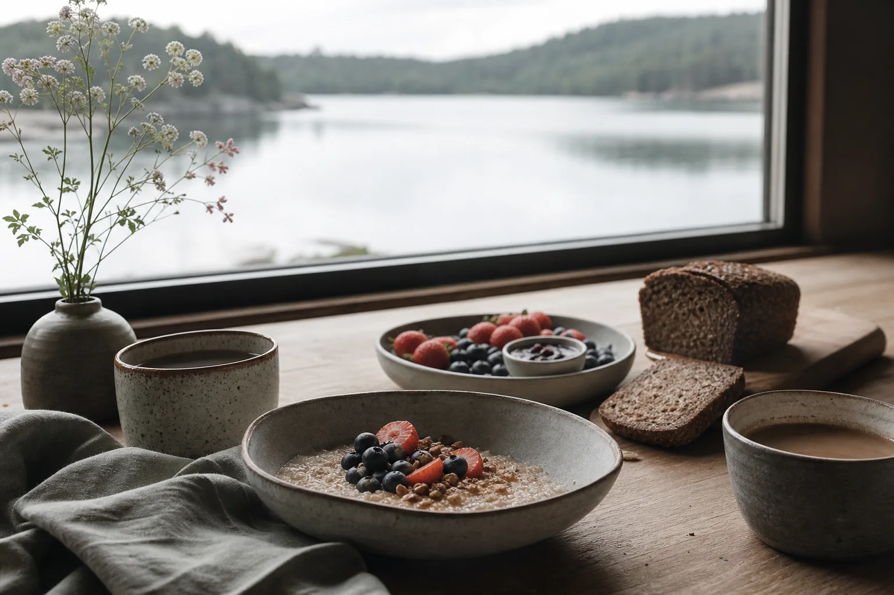
Бронирование
состояния страницы
Дополнительные состояния поддерживают тот же визуальный язык: меню не перекрывает атмосферу, календарь оставляет только важные данные, а подтверждение завершает путь коротким и спокойным сообщением.
ТИШЬЗакрытьКарелия · берег озера
Открытое меню
Выберите датыЗакрыть
Сентябрь
ПнВтСрЧтПтСбВс
123456789101112131415161718192021
Гости 2 взрослых− 2 +
Показать дома →
Выбор дат и гостей
ТИШЬЗакрыть
✓
Дом ждёт вас
Заявка отправлена. Мы свяжемся с вами в течение часа и подтвердим бронирование.
создать заметный бренд цветочного бюро без привычной романтичной эстетики
результат:
система айдентики, упаковка, оформление точки, доставка и шаблоны для рекламы
срок:
3 недели
концепт
«Поле» собирает свободные сезонные букеты для города. Визуальный язык строится на столкновении живых, несовершенных цветов с резкой типографикой и чистыми цветовыми плоскостями. Бренд выглядит смело, но не теряет ощущение ручной работы.
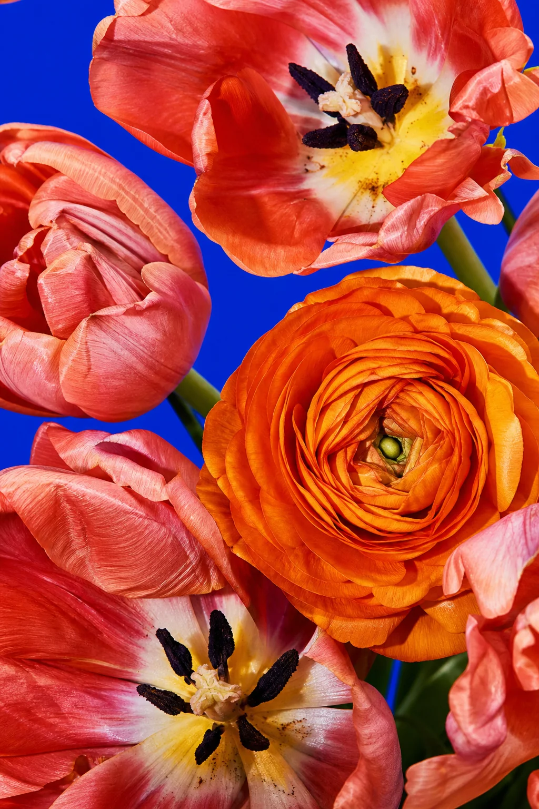
цвет без фильтровНасыщенный и честный фотостиль
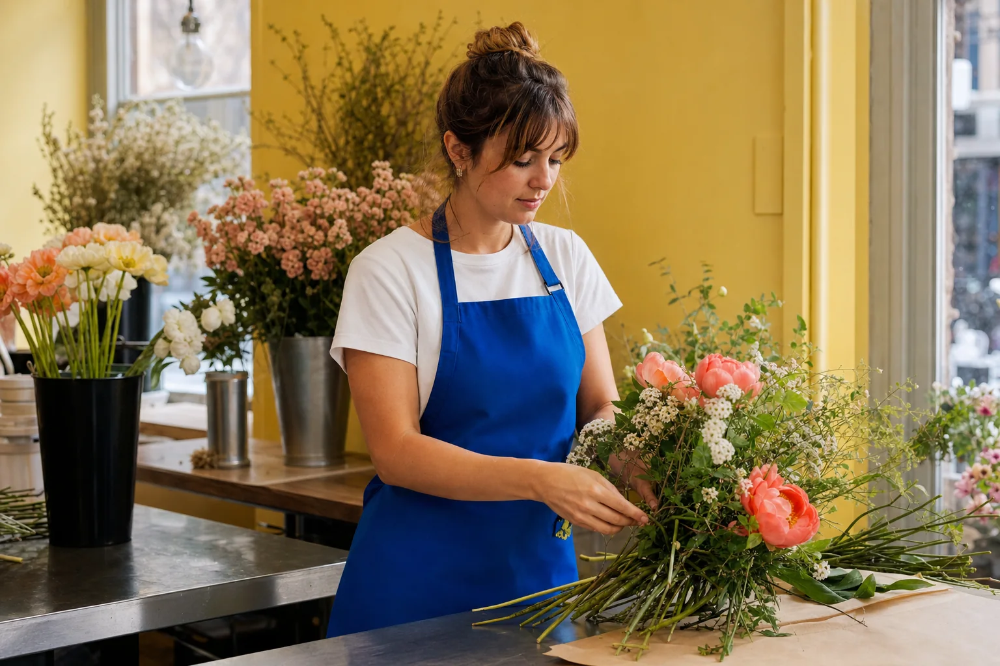
собрано рукамиПроцесс становится частью коммуникации
палитра
#F3EBDD · сливочный
#173CCE · кобальтовый
#FFC93C · солнечный
#E64B38 · коралловый
знак и типографика
Название набрано плотным гротеском и может растягиваться по формату, будто цветы заполняют свободное место. Круглая буква «О» превращается в простую метку: стикер, ценник или центр динамичной композиции.
основная версияПОЛЕцветочное бюро
Основной словесный знак
динамический знакОрастёт по формату
Круглая метка и принцип роста
голос брендаНЕ ИДЕАЛЬНЫЙ. ЗАТО ЖИВОЙ.букеты из сезонных цветов
Характер сообщений
графическая система
Круг, растянутые буквы и короткие фразы образуют гибкий набор элементов. Их можно собирать в плотный паттерн, использовать как отдельные стикеры или превращать в практичные ценники и памятки по уходу.
как ухаживатьСВЕЖАЯ ВОДАподрезайте стебли раз в два дня→
Ценник и памятка по уходу
упаковка
Все носители работают как конструктор: кобальтовая бумага, солнечная карточка и коралловая круглая метка комбинируются в разных пропорциях. Яркая система узнаётся даже без сложных иллюстраций.
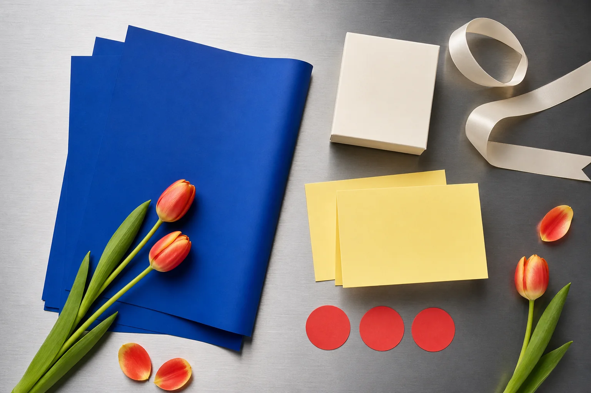
ПОЛЕЭто вам. Просто так.
Бумага, открытки и стикеры
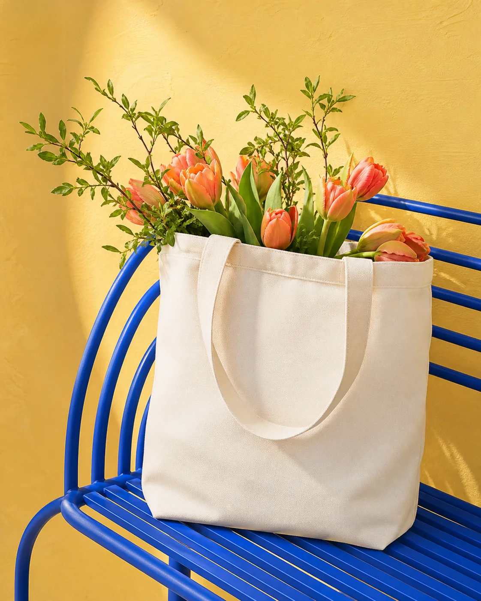
ПОЛЕФирменный шопер для букета
букетная линейка
Карточки сохраняют характер айдентики, но дают покупателю понятную информацию: размер, состав и настроение букета. Названия короткие и образные, а фотографии занимают почти весь формат.
новинка
ИСКРАтюльпаны, ранункулюсы, зелень
3 900 ₽
Средний сезонный букет
яркий
ЖАРтюльпаны, пионы, акцентные цветы
5 200 ₽
Большой акцентный букет
свободный
САДпионы, ветви, полевая зелень
4 600 ₽
Воздушный авторский букет
пространство и доставка
Вывеска превращает небольшую точку в яркий городской ориентир, а велосипед продолжает айдентику в движении. Название остаётся крупным и читаемым издалека.
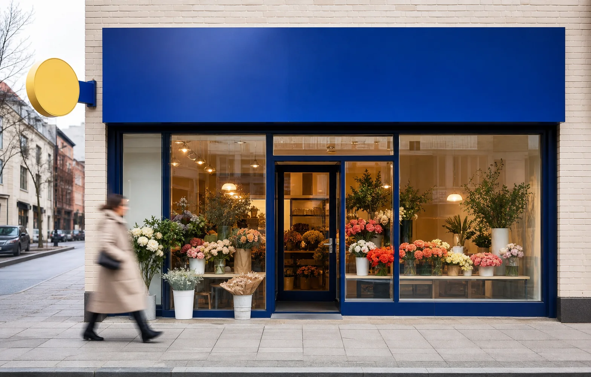
ПОЛЕПОформление цветочного бюро
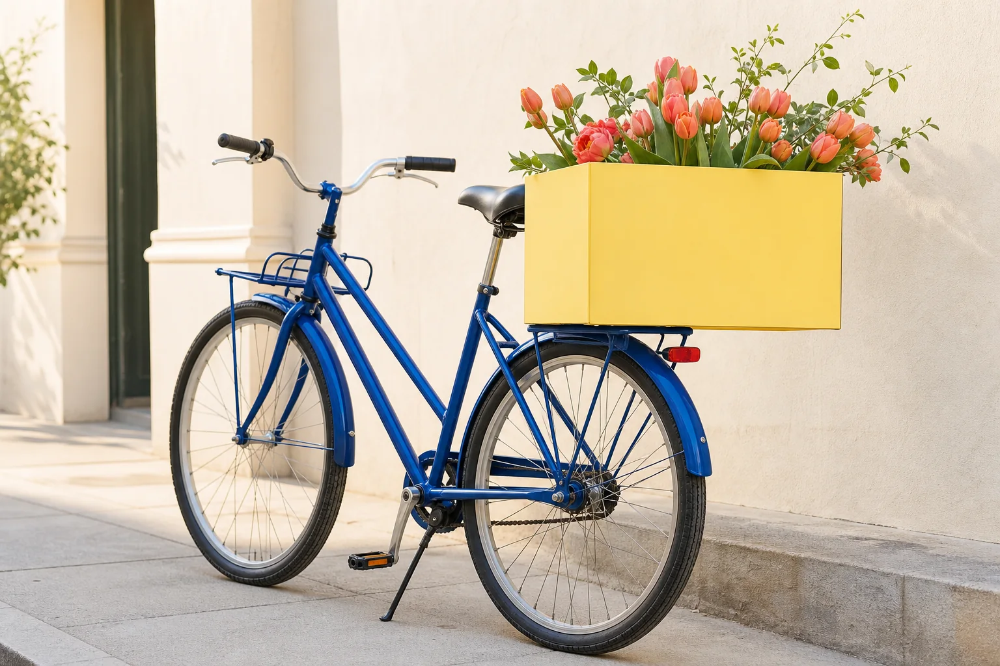
ПОЛЕцветы по городу
Фирменная доставка
рекламная серия
Серия строится на коротких живых фразах и резком кадрировании. Макеты легко обновлять под новые сезонные цветы, сохраняя узнаваемый ритм и цвет.
ПОЛЕ01
ЦВЕТЫ НЕ ПО ПЛАНУ
Сезонные букеты каждый день
Имиджевый плакат
ПОЛЕ02
СОБРАНО СЕГОДНЯ
Ни одного одинакового букета
Рассказ о процессе
ПОЛЕ03
ПРОСТО ПОДАРИТЕ
Доставим по городу сегодня
Макет для доставки
цифровые носители
В мобильных форматах система становится ещё плотнее: крупные названия, одна фотография и одно действие. Шаблоны подходят для историй, карточки букета и сообщения после оформления заказа.
ПОЛЕсегодня
букет дня
ЖАР
Пять свободных букетов в наличии до вечера
Забрать →
История с букетом дня
ПОЛЕМеню
сезонный букет
ИСКРА
Тюльпаны, ранункулюсы и свободная зелень. Каждый букет немного отличается.


.png)
.png)
.png)
.png)
.png)
.png)
.png)
.png)
.png)